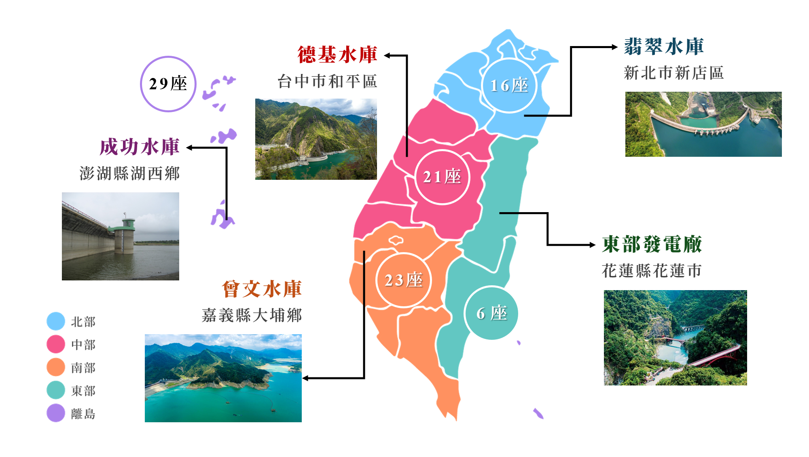

確保所有人都能取得可負擔、可靠、永續且現代化的能源
水力發電的原理是利用水的位能轉換為動能，再推動水輪機旋轉，帶動發電機將機械能轉換成電能，其發電核心是能量轉換。
主要包括水庫攔水、水流衝擊水輪機、發電與輸電等步驟，可分為水庫式、川流式、調整池式及抽蓄式等類型。
利用水庫蓄水形成的高低落差，讓水流經水輪機帶動發電機產生電力。 此方式發電穩定，並可兼具防洪、供水與調節用電等需求。
利用河川自然流動的水流推動水輪機發電，不需大型水庫蓄水， 對環境影響較小，但發電量會隨季節與水量變化。
在水力發電系統中設置調整池，用來暫時儲存上游發電後的水量， 以調節出水流量，使下游發電更穩定，常與水庫式或川流式搭配使用。
在用電離峰時將水抽送至上水庫儲存， 用電高峰時再放水發電，具備儲能與穩定電網的功能。

圖：台灣水庫分布示意圖